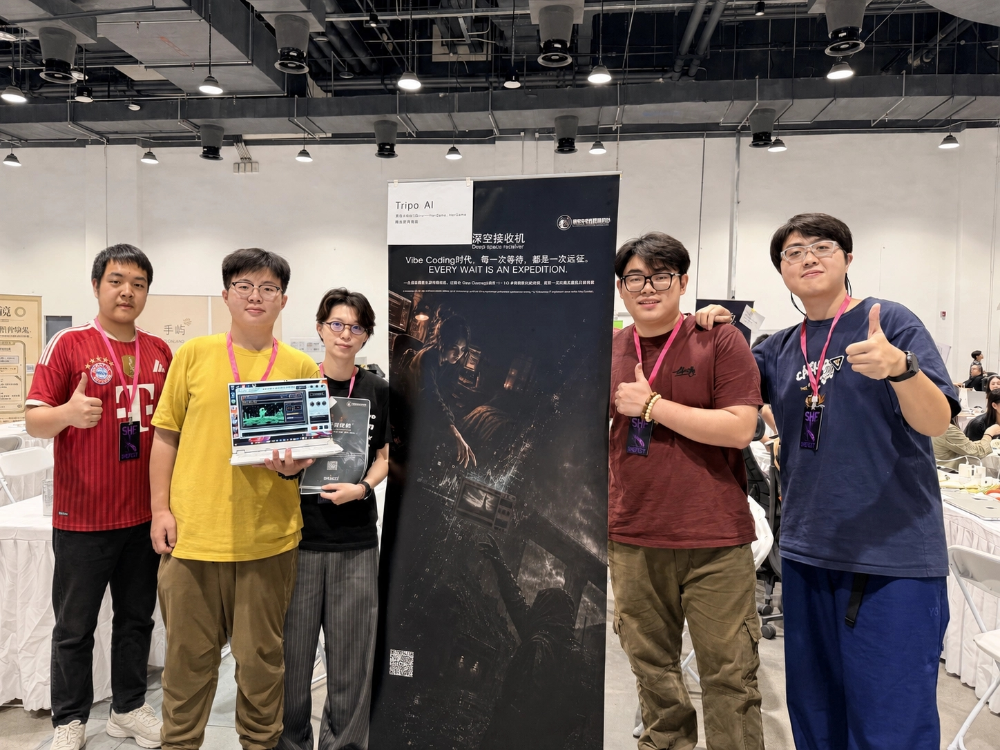

WE MAKE GAMES ABOUT DISTANCE, TRACES AND IMAGINATION.
OOO Studio 是一支专注于叙事体验与独特交互的独立游戏团队。我们希望让玩法、界面、声音与世界观彼此咬合，让玩家通过自己的操作发现故事，而不只是阅读故事。
OOO Studio IS AN INDEPENDENT TEAM FOCUSED ON NARRATIVE EXPERIENCES AND DISTINCT INTERACTION. WE BUILD GAMES WHERE PLAY, INTERFACE, SOUND AND WORLD-BUILDING WORK AS ONE—STORIES DISCOVERED THROUGH ACTION, NOT SIMPLY READ.
Deep Space Receiver is a narrative object that lives at the edge of your desktop. Across real time, Traveller sends back a treasure hunt that has gone off course.
GENRE
桌面常驻叙事体验
AMBIENT DESKTOP NARRATIVE
PLATFORM
DESKTOP
STATE
ALPHA CHAPTER IN PRODUCTION
FORMAT
7 REAL-TIME DAYS / 30 DISPATCHES
CONCEPT FRAME / 0001IMAGE RECEIVED
IMAGE RECEIVEDRX / 98.4%
VISUAL DEVELOPMENT / ALPHA ENVIRONMENT STUDY01—04
PROJECT 001 / ACTIVE当前唯一公开项目OUR ONLY ANNOUNCED PROJECTBUILD STATUS / IN DEVELOPMENT
03 / PROJECT BRIEF
深空接收机DEEP SPACE RECEIVER
首个公开项目 / 目前开发中
DEBUT TITLE / CURRENTLY IN DEVELOPMENT
AMBIENT DESKTOP NARRATIVE / REAL-TIME DELIVERY
一台安静常驻的接收机，把遥远旅程带到桌面一角。
A quiet receiver brings a distant journey to the edge of your desktop.
You cannot choose Traveller's route; you can only wait, receive, and reconstruct a derailed treasure hunt from thirty dispatches. Its quiet, low-interruption presence makes the time between messages part of the story.
WORLD / ALPHA
Alpha 曾自然宜居，却因长期工业污染、第一次灰雨与持续气候恶化而被全面撤离。数个世纪后，一张残缺藏宝图将 Traveller 引向 C-3 走廊下的密封货运节点；一次酸雨迫降，使 The Spine 的巨型残存桥墩成为重新辨认消失道路的唯一线索。
Alpha was once naturally habitable, until industrial pollution, the first Grey Rain and a worsening climate forced a full evacuation. Centuries later, a fragmentary treasure map leads Traveller toward a sealed freight node beneath C-3—until an acid-rain crash landing turns the surviving piers of The Spine into the only line through a vanished road.
TYPE / 类型
桌面常驻叙事体验
AMBIENT DESKTOP NARRATIVE
EXPERIENCE / 体验
等待 → 接收 → 查看 → 归档
WAIT → RECEIVE → INSPECT → ARCHIVE
CHAPTER / 章节
ALPHA / 7 REAL-TIME DAYS
FORMAT / 形式
30 INDEPENDENT DISPATCHES
STATUS / 状态
IN DEVELOPMENT / RELEASE TBA
PLATFORM / 平台
DESKTOP
04 / PROMOTIONAL MATERIALS
宣发资料MEDIA ARCHIVE
概念设定、制作中的影像与工作室最新动态将在这里持续归档。
CONCEPTS, WORK-IN-PROGRESS FILMS AND STUDIO NEWS WILL BE ARCHIVED HERE.
GALLERY / 001
ALPHA / PALE BASIN / C-3
设定概念图集
CONCEPT ART
穿过 Alpha 的酸雨与盐化荒原，沿 C-3 走廊抵达 The Spine。这里记录着《深空接收机》世界最初被捕获的形态。
Cross Alpha’s acid rain and salt flats, follow the C-3 corridor, and arrive at The Spine. These images capture the earliest visual form of Deep Space Receiver’s world.
NEWS / 001

2026.08.30 / FIRST PRIZE
最新动态
LATEST NEWS
OOO Studio《深空接收机》获SheNicest千人黑客松游戏赛道一等奖。
OOO Studio’s Deep Space Receiver wins First Prize in the Game Development Track at the SheNicest Hackathon.
TRAILER / 001立即播放PLAY VIDEOYOUTUBE / 16:9
AVAILABLE NOW / WATCH
《深空接收机》演示视频
DEEP SPACE RECEIVER / DEMO
观看《深空接收机》演示视频，了解桌面接收、信号查看与深空探索体验。
Watch the Deep Space Receiver demo and discover its desktop transmissions, signal archive, and deep-space experience.
ALPHA / PALE BASINC-3 / THE SPINEDSR-03A / INTERFACELATEST NEWS / FIRST PRIZETRAILER / WATCH NOWALPHA / PALE BASIN
05 / RECEIVER CREW
保持监听KEEP LISTENING
五位初创成员。点击卡片查看简介与联系信息。
FIVE FOUNDING MEMBERS. OPEN A CARD FOR PROFILE AND CONTACT.